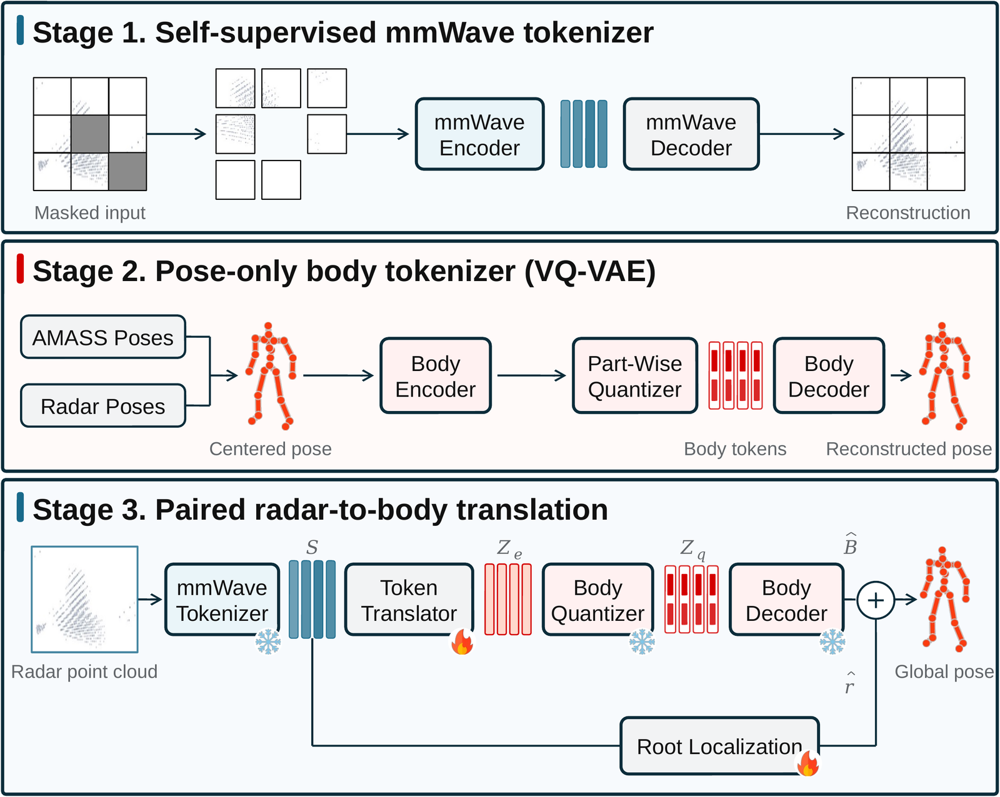
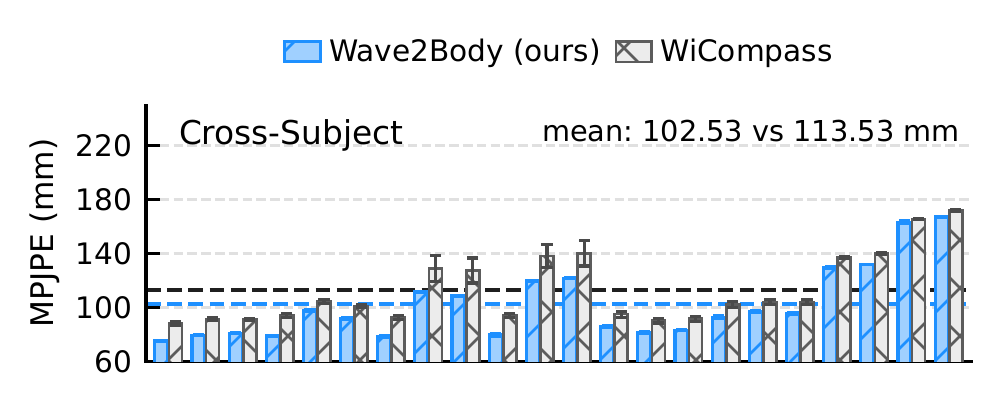
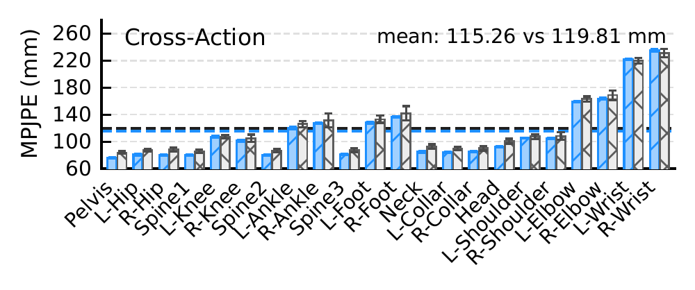
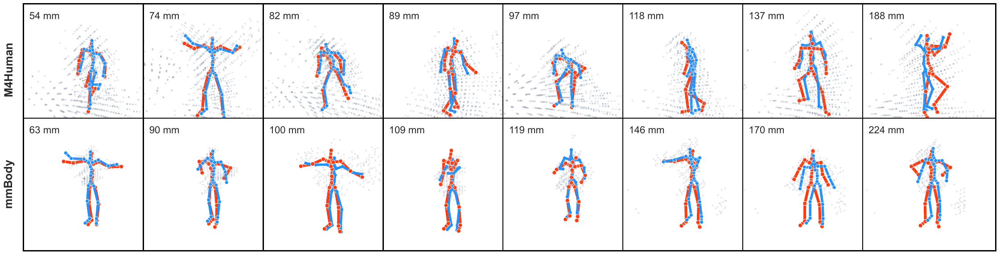
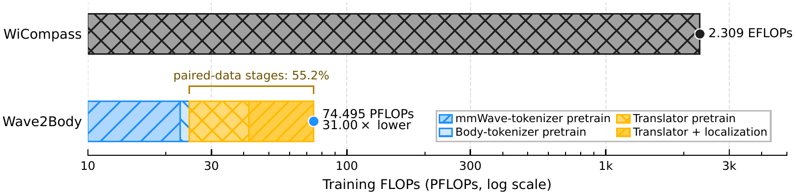
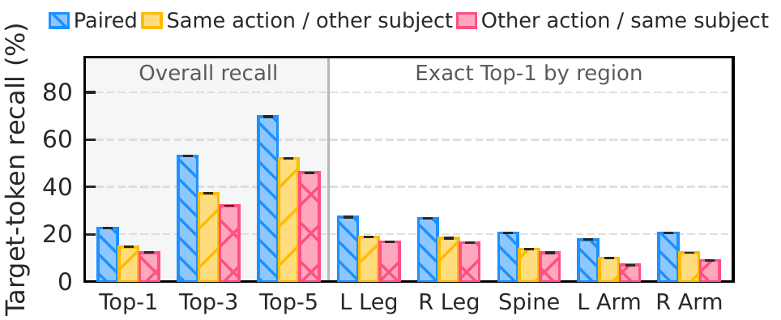
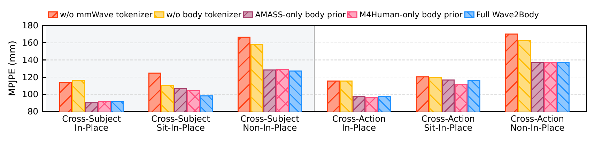

Stage 1
Self-supervised mmWave Tokenizer
A Point-MAE-style encoder learns continuous radar tokens by reconstructing masked local point-cloud patches without pose labels.
Unlabeled radar60-second overview
See how sparse radar reflections become structured body tokens, why decoupled training matters, and where the resulting gains come from in one concise visual tour.
Millimeter-wave (mmWave) radar enables privacy-friendly human sensing, but its sparse point clouds are physical measurements of view-dependent electromagnetic reflections and only indirectly characterize body articulation. Recovering a complete 3D pose from such partial, geometry-dependent observations is therefore under-constrained. Existing methods directly regress joint coordinates from paired radar-pose data, relying on the same limited paired supervision to learn radar perception, human-body structure, and their alignment. This coupling can encourage dataset-specific shortcuts under ambiguous radar observations. We propose Wave2Body, a radar-to-body token translation framework that decouples these learning targets using a self-supervised mmWave tokenizer, a pretrained compositional body tokenizer that defines the output space, and a lightweight translator between them. Experiments on M4Human and mmBody show that Wave2Body achieves stronger cross-domain generalization than previous methods while incurring much lower computational costs for training and inference.
Radar returns depend on body geometry, orientation, motion, signal propagation, and sensor configuration. They are sparse, view-dependent reflections rather than dense observations of anatomical joints, so multiple plausible body configurations can agree with the same partial measurement.
Entangled learning targets. A conventional supervised regressor asks the same limited paired radar-pose dataset to learn sensor representations, valid human-body structure, and cross-modal alignment at once. Under ambiguous observations, this coupling can reward dataset-specific shortcuts.
A structured prediction interface. Wave2Body independently pretrains a radar-token space and a compositional body-token space, then restricts paired supervision to learning the translation and global localization.
Wave2Body assigns each data source a focused role: unlabeled radar for sensor representations, pose-only motion data for human-body priors, and paired radar-pose samples for cross-modal alignment and global localization.

Stage 1
A Point-MAE-style encoder learns continuous radar tokens by reconstructing masked local point-cloud patches without pose labels.
Unlabeled radarStage 2
A part-structured VQ-VAE learns 24 discrete tokens across five kinematic regions from pelvis-centered pose-only data.
AMASS + radar posesStage 3
Frozen tokenizers expose reusable interfaces; a query-based translator predicts body embeddings while a separate head recovers the pelvis.
Paired radar-pose dataUnder a matched radar-frame absolute-pose protocol, Wave2Body improves the micro-average against the strongest competitor on both M4Human distribution shifts and on mmBody. Its largest gains appear under subject shift and dynamic held-out motions.
M4Human Cross-Subject
113.53→102.53 mm
9.7% lower MPJPE
M4Human Cross-Action
119.81→115.26 mm
3.8% lower MPJPE
mmBody Official Test
139.69→128.17 mm
8.2% lower MPJPE
Best matched competitor → Wave2Body. Lower is better.


Predictions remain human-like across the error spectrum. In the hardest cases, errors mainly appear as global root shifts or ambiguous distal-limb articulation under sparse radar coverage.

Independent token interfaces substantially reduce both cold-start training compute and high-throughput inference cost against the matched WiCompass baseline.

Paired target-token recall exceeds identity- and action-matched controls, supporting sample-specific translation rather than a frequent-pose shortcut. Removing either pretrained token interface consistently hurts pose accuracy.

Token-alignment mismatch correlates with root-aligned pose error, connecting recovery in the discrete target space to downstream articulation accuracy.

@misc{liang2026wave2body,
title = {Wave2Body: Rethinking mmWave Human Pose Estimation as Radar-to-Body Token Translation},
author = {Liang, Bo and Gong, Chen and Gao, Wei and Xu, Chenren},
year = {2026},
eprint = {2607.18875},
archivePrefix = {arXiv},
primaryClass = {cs.CV},
url = {https://arxiv.org/abs/2607.18875}
}